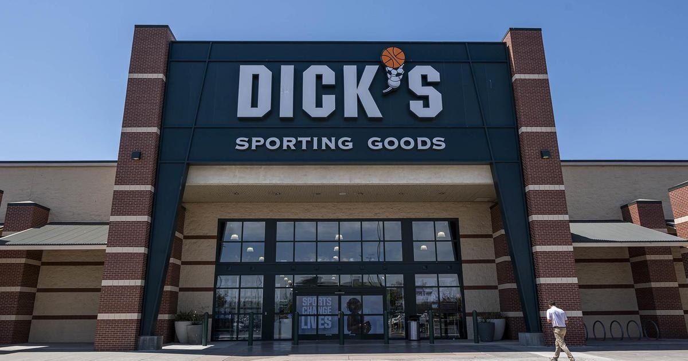

Dick's 2Q profit falls, and the retailer lowers its full-year outlook on worries about theftDick's Sporting Goods profit slipped in its second quarter and missed Wall Street's expectations as the retailer cut its full-year profit outlook, citing worries over theft at its stores. Shares declined more than 24% in morning trading Tuesday. For the period ended July 29, Dick's earned $244 million, or $2.82 per share. A year earlier the company earned $319 million, or $3.25 per share. Analysts polled by FactSet predicted earnings of $3.81 per share. "Our Q2 profitability was short of our expectations due in large part to the impact of elevated inventory shrink, an increasingly serious issue impacting many retailers," President and CEO Lauren Hobart said in a statement. Neil Saunders, managing director of GlobalData, said in a statement that a large portion of Dick's quarterly profit drop appeared to be from theft. "In our view this is a particular issue for Dick's as many of the products it sells are desirable and have good resale values," he said. "While the problem is not one of Dick's making, management does not seem to have any immediate solutions to the problem which could, if left unchecked, continue to weigh down on the bottom line." Many retailers have struggled with theft concerns. In May Target said theft was cutting into its bottom line and that it expected related losses could be $500 million more than last year, when losses from theft were estimated to be anywhere from $700 million to $800 million. So that means losses could top $1.2 billion this year. During Target's second-quarter conference call last week, CEO Brian Cornell told media and analysts that during the first five months of this year, its stores saw a 120% increase in theft incidents involving violence or threats of violence compared to the year-ago period. Dick's sales during the quarter climbed to $3.22 billion from $3.11 billion. That missed Wall Street's estimate of $3.24 billion. Sales at stores open at least a year, a key gauge of a retailer's health, increased 1.8%. That compares with a 5.1% decline in the prior-year period. The Pittsburgh-based chain said it eliminated an unspecified number of jobs at its customer support center to streamline costs this week and expects to post $20 million of severance expense in the third quarter. Dick's now foresees full-year earnings in a range of $11.33 to $12.13 per share. Its previous guidance was for earnings between $12.90 and $13.80 per share. for more features. |
 |